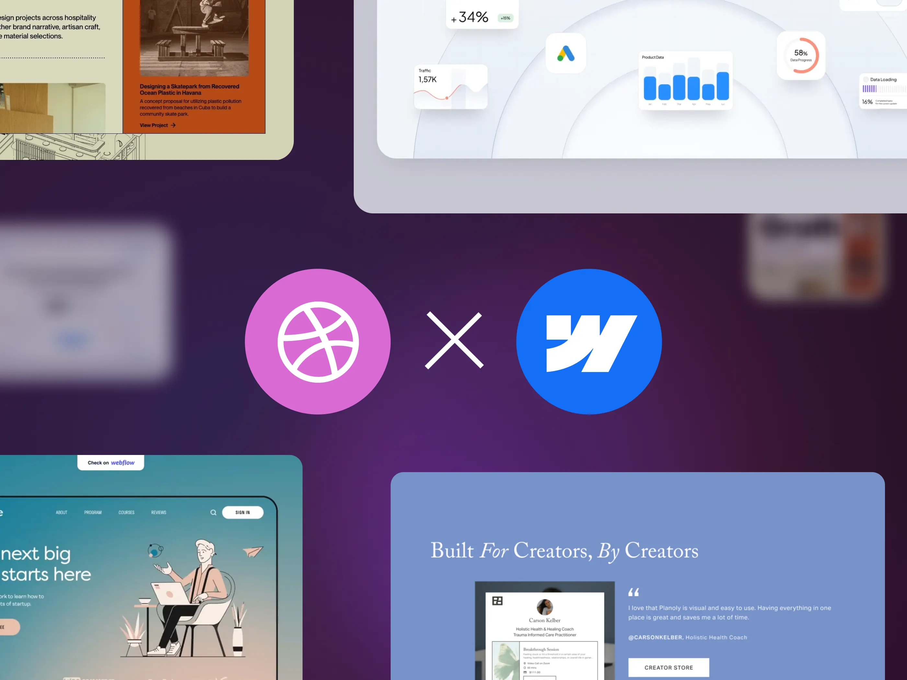
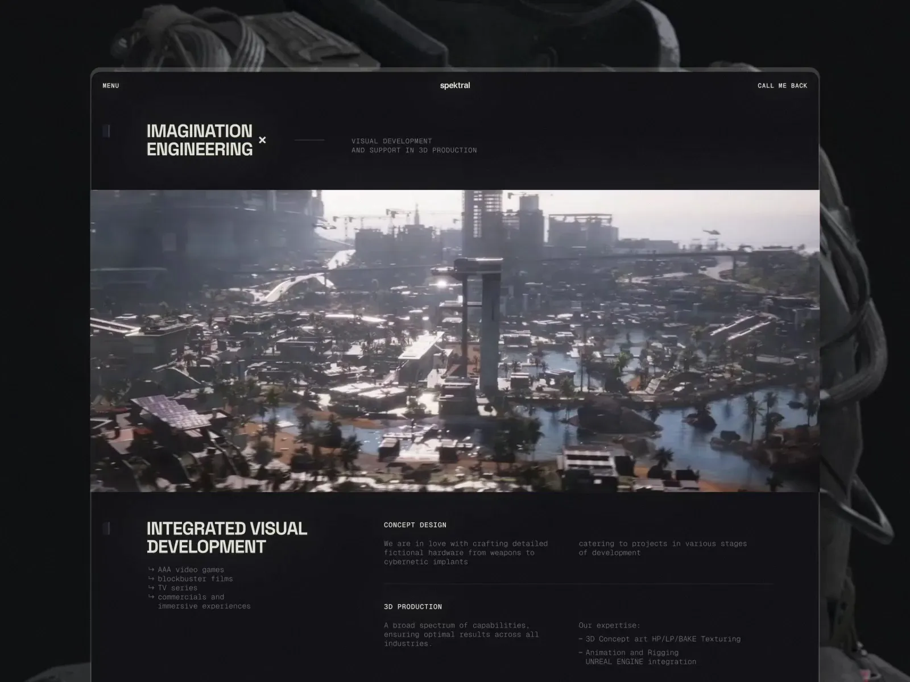

 How to Share
Your Work on Dribbble (While Attracting the Right Clients) Create, don't wait
Shots are how clients and peers understand your skills, taste, and process. And
designers who grow their businesses on Dribbble tend to do two things well: they share
work regularly and clearly. This guide walks through what to post, how to present it,
and how to make every Shot work a little harder for you.
How to Share
Your Work on Dribbble (While Attracting the Right Clients) Create, don't wait
Shots are how clients and peers understand your skills, taste, and process. And
designers who grow their businesses on Dribbble tend to do two things well: they share
work regularly and clearly. This guide walks through what to post, how to present it,
and how to make every Shot work a little harder for you.Grid Post Title

Eugene and the Shakuro team have built a design practice grounded in experimentation, intention, and visual storytelling. As a Design Lead, Eugene shares how Dribbble became a creative engine for the team; not just for exposure, but for shaping ideas, building trust, and growing long-term client relationships